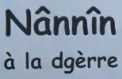

Sanm'di lé 15 dé Févri 2003, y'eût eune grande démonstrâtion dans l'Vièr Marchi contre la dgèrre m'nichie contre l'Iraq par l's Êtats-Unnis, lé Rouoyaume-Unni et lus alliés.
Y'avait des tabl'yes où'est qu'les gens pouvait sîngni des pétitions et êcrithe des cartes postales tchi fûtent affichées à des colombes dé paix avant d'êt' env'yées ès grôsse têtes à Downing Street et la Blianche Maîson.
 Au pid d'la Pyramide, un janne minnistre Méthodiste - un Améthitchain tchi dêssèrt des chapelles en Jèrri pouor un an - fit un discours tchi fut mèrtchi par d's appliaudissements ênèrgétiques du grand nombre dé gens assembliées dans l'Vièr Marchi.
Ch'fut là, souos l'Rouai George II, tchi 'tait lé drein Rouai Britannique à m'ner ses soudards en batâle pèrsonnellement, qu'des gens d'Jèrri fîtent un appel à l'aut' George, lé chein à la Blianche Maîson, et au Preunmié Minnistre du Rouoyaume Unni, Tony Blair: “Nânnîn à la dgèrre.”
En même temps y'avait des grandes pathades et démonstrâtions l'tou du monde contre la dgèrre: à Londres dans les million d'gens marchaient, et un d'mié-million à Bèrlîn, mais nou dithait deux millions à Rome - mais tout coumme en Jèrri dans des p'tites commeunautés y'avait des démonstrâtions modestes mais sîngnificatives.
Viyiz étout: